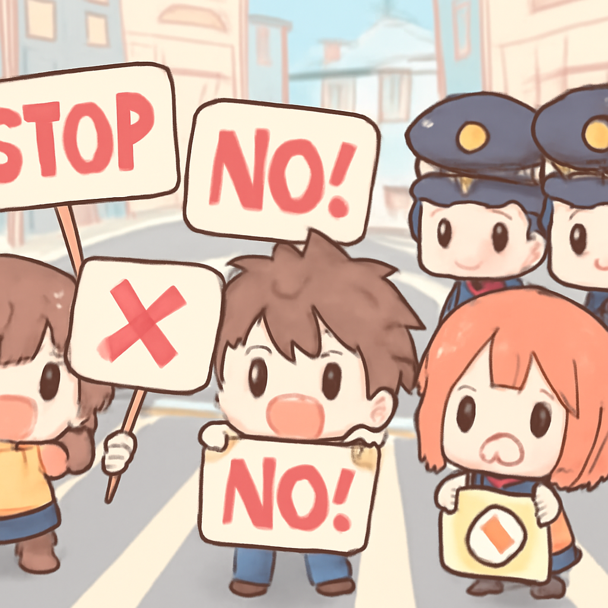
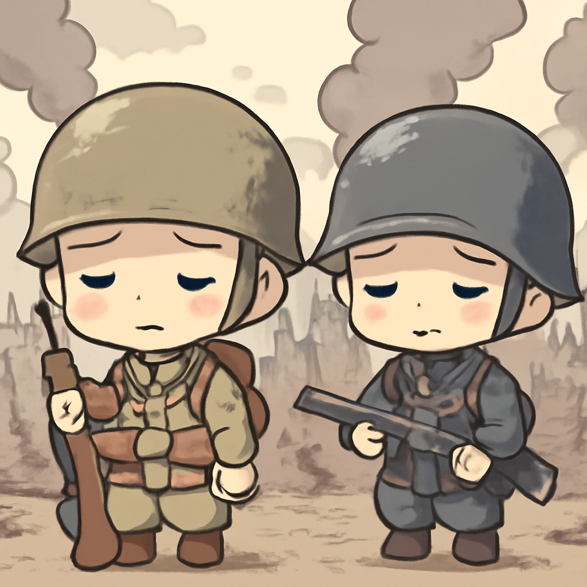
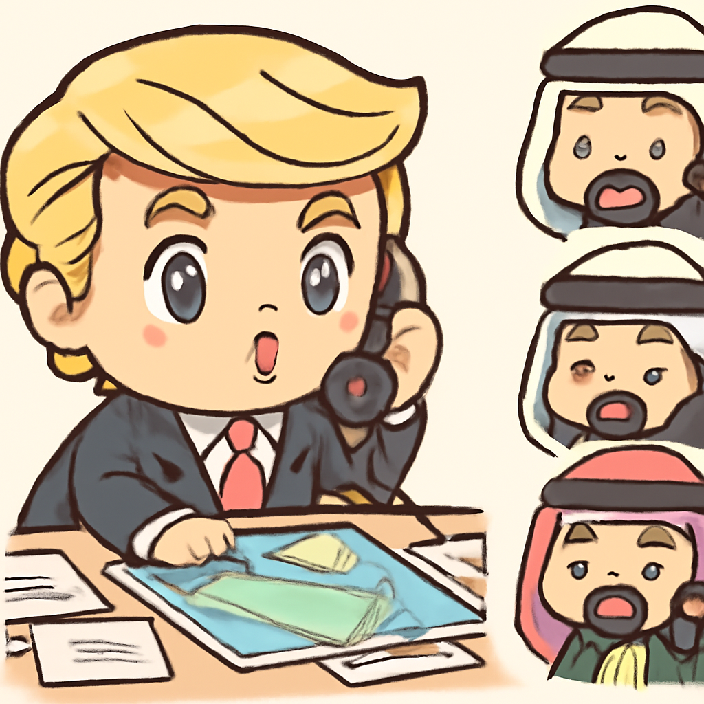

其一 · 剛果民主共和國 · 埃博拉疫情宣告國際緊急狀態
剛果的埃博拉疫情已造成100人死亡。
在剛果民主共和國，埃博拉疫情持續擴散，目前已造成至少100人死亡，世界衛生組織已宣布這是國際緊急事件。這波疫情讓許多人感到不安，畢竟埃博拉可不是什麼小感冒。
🔗 原始新聞 ↗
2026-05-19 · 以古觀今，以笑抗愁
剛果的埃博拉疫情已造成100人死亡。
在剛果民主共和國，埃博拉疫情持續擴散，目前已造成至少100人死亡，世界衛生組織已宣布這是國際緊急事件。這波疫情讓許多人感到不安，畢竟埃博拉可不是什麼小感冒。
🔗 原始新聞 ↗
內羅畢因高油價抗議，造成四人喪命。

在肯尼亞的內羅畢，因為油價高漲，數千名民眾走上街頭抗議，結果導致四人遇難。這些抗議活動讓交通幾乎癱瘓，似乎連油價都在看情況惡化而感到緊張。
🔗 原始新聞 ↗
以色列對黎巴嫩的空襲造成嚴重死亡人數。

以色列與黎巴嫩的衝突持續升溫，根據最新報導，死亡人數已超過三千，儘管名義上雙方有停火協議，但似乎作用不大。這場悲劇讓人思考，和平到底去哪裡了？
🔗 原始新聞 ↗
特朗普應海灣國家要求，放棄對伊朗攻擊計劃。

美國總統特朗普宣布，因為海灣國家的要求，他將取消原定於星期二的對伊朗攻擊計劃，並表示目前正在進行"嚴肅談判"。看來有時候，談判的力量比軍事行動來得重要。
🔗 原始新聞 ↗
俄羅斯新任人權專員涉嫌幫助綁架烏克蘭兒童。
俄羅斯新任人權專員被指控協助綁架烏克蘭的兒童，這一消息引發了國際社會的憤怒與譴責。在人權的名義下，卻出現這種行為，實在讓人感到心寒。
🔗 原始新聞 ↗